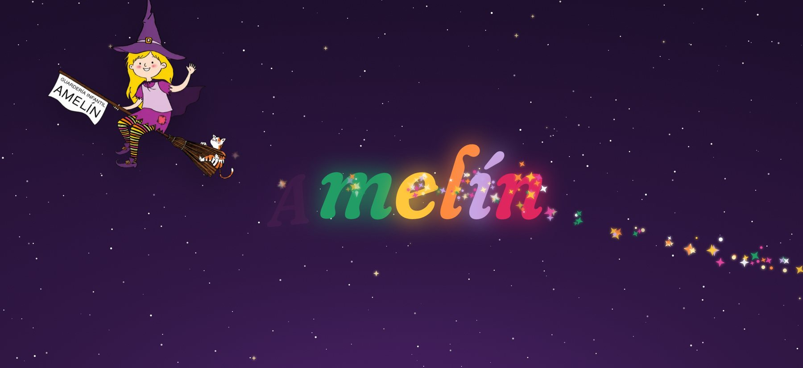
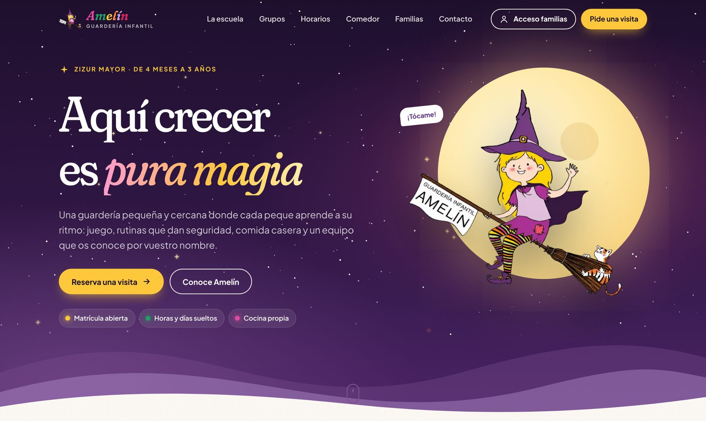
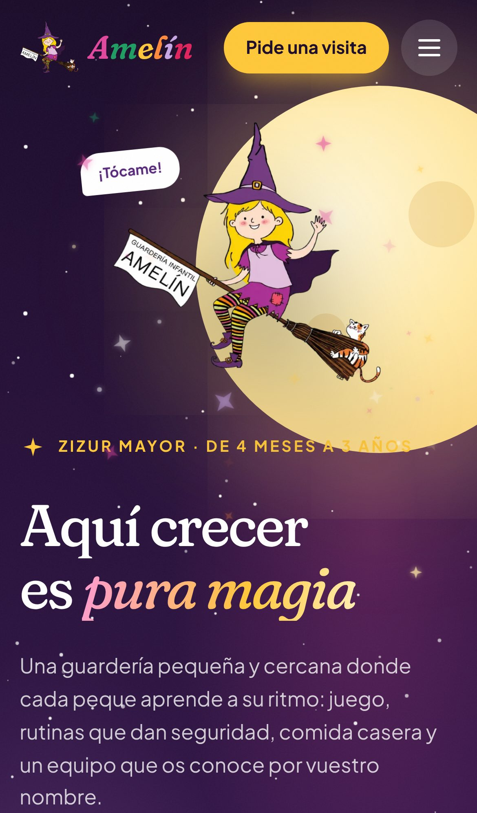
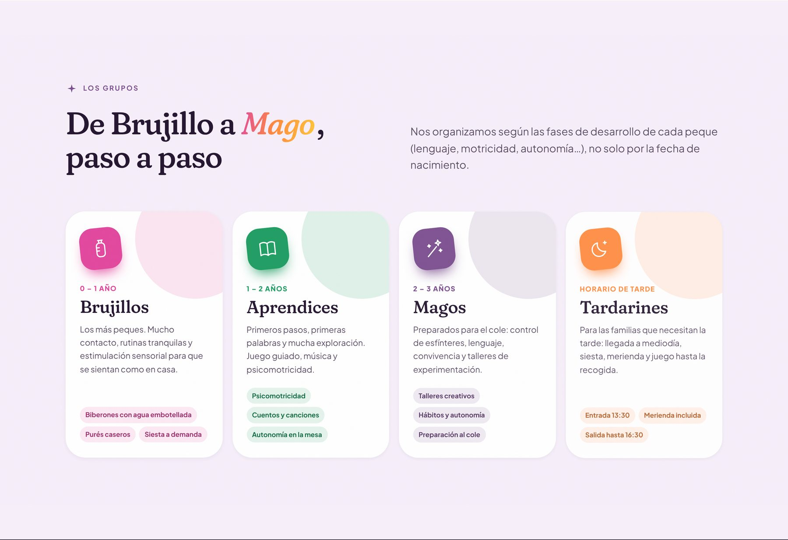
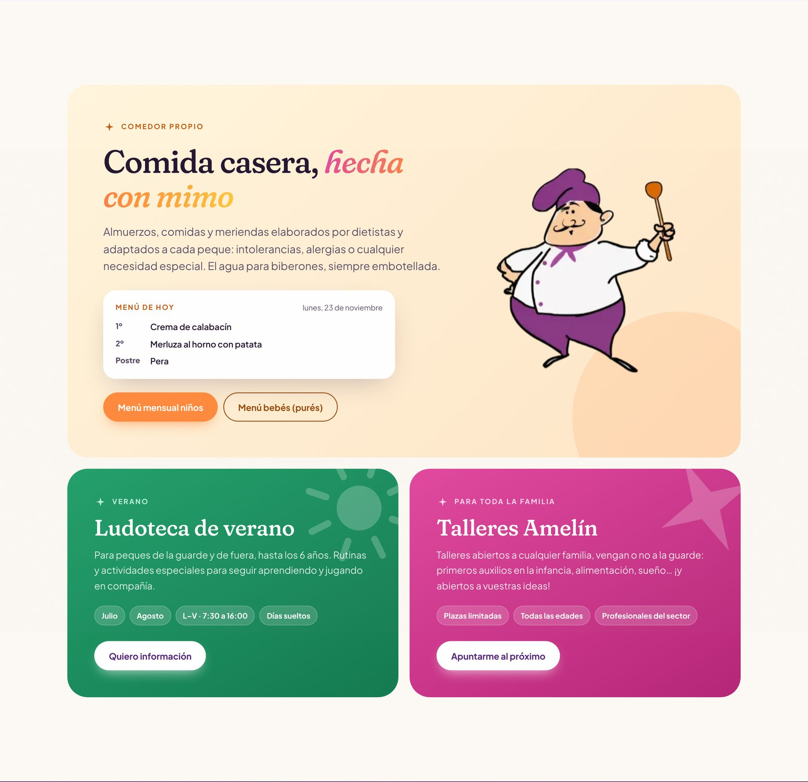
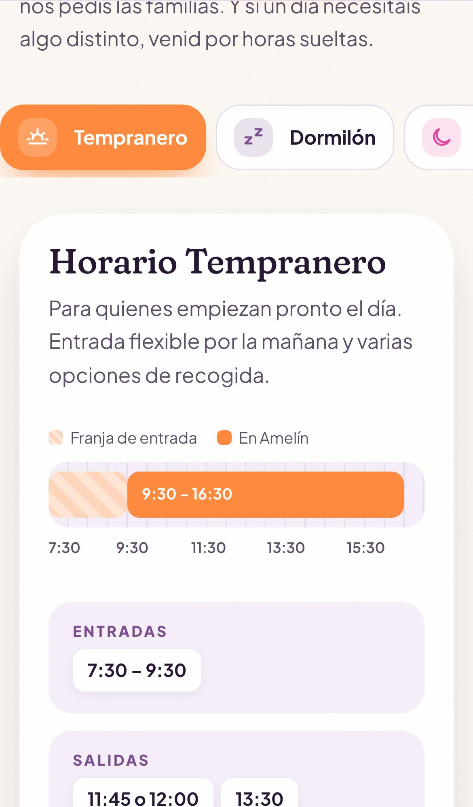
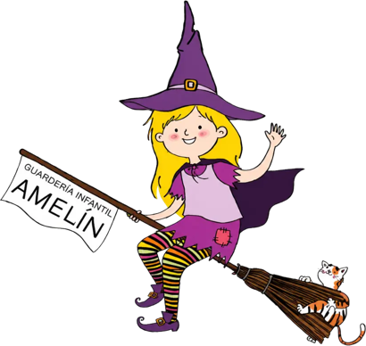

Diseño completo de la nueva web de la Guardería Infantil Amelín, pensada para las familias y protagonizada por vuestra bruja.
Preparada paraGuardería Infantil Amelín
Preparada porÁngel Paesa
FechaNoviembre 2026
Validez30 días
Propuesta de nueva web · Ángel PaesaAmelín
Punto de partida
Vuestra guarde ha crecido. Vuestra web, todavía no.
Amelín es un sitio cercano, flexible y con mucho cariño. Pero cuando una familia de Zizur o de Pamplona busca guardería en el móvil, se encuentra una web de 2015 que todavía no refleja todo eso.
1
Diseño de 2015, pensado para ordenadorHoy la mayoría de las familias buscan desde el móvil. Una web antigua da sensación de centro descuidado, aunque la realidad sea la contraria.
2
Información desactualizadaEl calendario publicado es del curso 2023-2024 y la información más útil (horarios, menús) está repartida en imágenes y PDF difíciles de leer.
3
La bruja, escondidaTenéis una mascota con muchísima personalidad que casi no aparece. Es vuestro elemento diferenciador y merece ser la protagonista.
4
Poca visibilidad en GoogleSin títulos, descripciones ni datos para Google, es difícil aparecer cuando alguien busca «guardería en Zizur Mayor».
Objetivos
Qué quiero conseguir
Enamorar a primera vistaQue en 3 segundos se sienta que Amelín es un lugar especial.
Responder antes de que preguntenHorarios, edades, comedor y servicios de un vistazo.
Conseguir más visitas al centroLlamar o pedir visita en un toque, desde cualquier móvil.
Aparecer en GoogleEn las búsquedas de familias de Zizur, Cizur y Pamplona.

Así se abre la nueva web: la bruja cruza la pantalla y escribe «Amelín» con estrellas.
2
Propuesta de nueva web · Ángel PaesaAmelín
La propuesta
Una web única, con la bruja como protagonista
Nada de plantillas. Un diseño hecho a medida con los colores de vuestro rótulo, animaciones suaves y toda la información que buscan los padres, ordenada y fácil de encontrar.
guarderiaamelin.com

✦
Intro animadaLa bruja vuela de lado a lado al entrar, dejando una estela de estrellas.
✦
Bruja interactivaFlota sobre la luna y, si la tocas, da una voltereta mágica.
✦
Pensada para el móvilSe ve perfecta en cualquier teléfono, tablet u ordenador.
✦
Bruja guíaAcompaña al bajar y ofrece accesos rápidos: llamar o pedir visita.
✦
Rápida y ligeraCarga en segundos y no depende de plugins que haya que actualizar.
✦
Vuestra identidadLos colores A·M·E·L·Í·N, la luna y el cielo de noche de la bruja.

Versión móvil
3
Propuesta de nueva web · Ángel PaesaAmelín
Contenido de la web
Todo lo que buscan las familias, a mano

Los grupos: Brujillos, Aprendices, Magos y Tardarines.

Comedor con el menú del día, ludoteca de verano y talleres.
Secciones incluidas
1
Portada y presentaciónQuiénes sois, el equipo y vuestros valores.
2
Grupos por edadesDe 4 meses a 3 años, con lo que hace cada grupo.
3
Un día en AmelínLa rutina diaria, que la escoba recorre al hacer scroll.
4
Horarios interactivosTempranero, Dormilón, Tardarines, Combinado y horas sueltas.
5
Instalaciones230 m², 4 salas y todos los detalles de seguridad.
6
Comedor y menúsMenú del día y descarga de los menús mensuales.
7
Ludoteca y talleresVerano hasta 6 años y talleres abiertos a familias.
Pedir visita y contactoFormulario, llamada en un toque, mapa y Facebook.
10
Textos legalesAviso legal, privacidad y cookies.

Horarios en el móvil
4
Propuesta de nueva web · Ángel PaesaAmelín
De regalo
Y para que os encuentren, dos regalos
Una web bonita sirve de poco si nadie llega a ella. Por eso, junto con la web, os dejo preparado Google para que las familias de la zona os encuentren.
Regalo
Google Maps
Optimización de la ficha de Google
Es lo primero que ven los padres al buscar «guardería» en Google o en Maps. Dejaré vuestra ficha completa y atractiva.
Categorías, servicios y descripción optimizados
Horarios, teléfono, dirección y enlace a la nueva web revisados
Organización de las fotos del centro
Botones de llamar y cómo llegar bien configurados
Pautas para pedir y responder reseñas
Regalo
Buscadores
SEO básico
Dejaré la web preparada para que Google la entienda y la muestre a quien busca guardería en vuestra zona.
Datos estructurados de guardería (dirección, horario, teléfono)
Alta en Google Search Console y mapa del sitio
Web rápida, adaptada a móvil e imágenes optimizadas

El resultado: más familias que os conocen, y más visitas al centro
Ficha de Google, web y botón de «Pedir visita» trabajan juntos: la familia os encuentra, ve un sitio bonito y cuidado, y os llama en un toque.
5
Propuesta de nueva web · Ángel PaesaAmelín
Inversión
Una web completa, a un precio muy asequible
Web completa + regalos
450 €IVA no incluido
Pago único · sin cuotas mensuales obligatorias
Diseño y desarrollo de la web a medida, publicada en vuestro dominio, con la optimización de la ficha de Google y el SEO básico de regalo.
Incluido
Diseño exclusivo con la bruja Amelín y animaciones
Las 10 secciones descritas en esta propuesta
Adaptación a móvil, tablet y ordenador
Formulario de visita conectado a vuestro email
Publicación en guarderiaamelin.com
Alojamiento sin coste mensual
Una ronda de cambios antes de publicar
De regalo
Optimización de la ficha de Google
SEO básico de la web
Forma de pago
50 % al aceptar la propuesta
50 % al publicar la web
Plazo
2 a 3 semanas desde que reciba las fotos y los textos revisados.
No incluido
Renovación anual del dominio (como hasta ahora)
Sesión de fotos profesional
App o área privada de comunicación con las familias
Cambios futuros
35 €
por hora · IVA no incluido
Cuando necesitéis algún cambio en la web
Una vez publicada, me encargo yo de cualquier cambio que necesitéis. Solo pagáis el tiempo que dedico a hacerlo, sin cuotas fijas.
Cambiar el menú del mes
Cambiar o añadir fotos
Actualizar horarios o textos
Añadir una sección nueva
6
Propuesta de nueva web · Ángel PaesaAmelín
Próximos pasos
Así de fácil es despegar
En unas pocas semanas podéis tener la nueva web publicada y vuestra ficha de Google a punto para el próximo periodo de matrícula. Trabajo de forma independiente, así que hablaréis siempre directamente conmigo, de principio a fin.
01
AceptaciónFirmáis esta propuesta y se abona el 50 %.
02
MaterialMe pasáis fotos del centro, revisáis textos y horarios, y me dais acceso a la ficha de Google.
03
RevisiónOs enseño la web terminada y hago los ajustes que necesitéis.
04
¡Publicada!Publico la web en guarderiaamelin.com y dejo Google configurado.
Qué necesito de vosotros
8–15 fotos de las salas, el patio y el día a día (sin caras de los peques o con autorización)
Revisión de textos, horarios y servicios
Menús y calendario escolar actuales
Acceso al dominio y a la ficha de Google
Aceptación de la propuesta
Propuesta válida durante 30 días desde su fecha. Al firmar, Guardería Infantil Amelín acepta el alcance, el precio (450 € + IVA) y la forma de pago descritos.